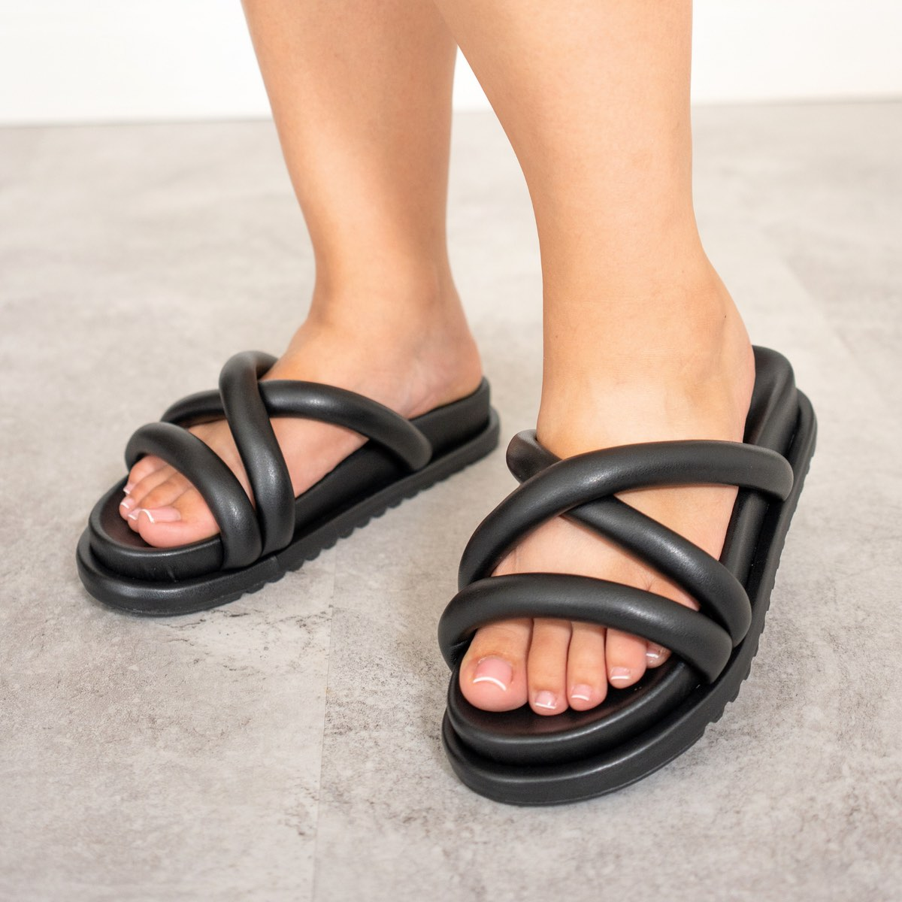

LUCIANA / NEGROSANDALIA CANOA
Luciana
$90.000 COPTiras cruzadas, textura lisa y una suela de 2 cm. Una silueta abierta para llevar el negro a tus combinaciones.
- Material
- Cuero vegano liso
- Suela
- PU lineal
- Altura
- 2 cm
Color de esta selecciónMás opciones en Megam ↗
Elige tu tallaGuía de tallas ↓
Ver y comprar en Megam ↗Compra y pago en la tienda oficial. Precio consultado el 1 nov. 2026. Confirma disponibilidad, color y talla antes de pagar. Guardar aquí no reserva inventario.
MENOS DUDAS. MÁS DETALLES.
Ponlas lado a lado.
Elige los modelos que quieres comparar.
Información de las fichas oficiales. Precios en pesos colombianos.
EL AJUSTE EMPIEZA AQUÍ
Tu talla,
con una referencia.
Mide el largo de tu pie y consulta la guía que publica Megam. Si estás entre dos medidas, confirma el ajuste con la marca.
| Talla | 35 | 36 | 37 | 38 | 39 | 40 |
|---|---|---|---|---|---|---|
| cm | 22,5 | 23,5 | 24 | 24,5 | 25,5 | 26 |